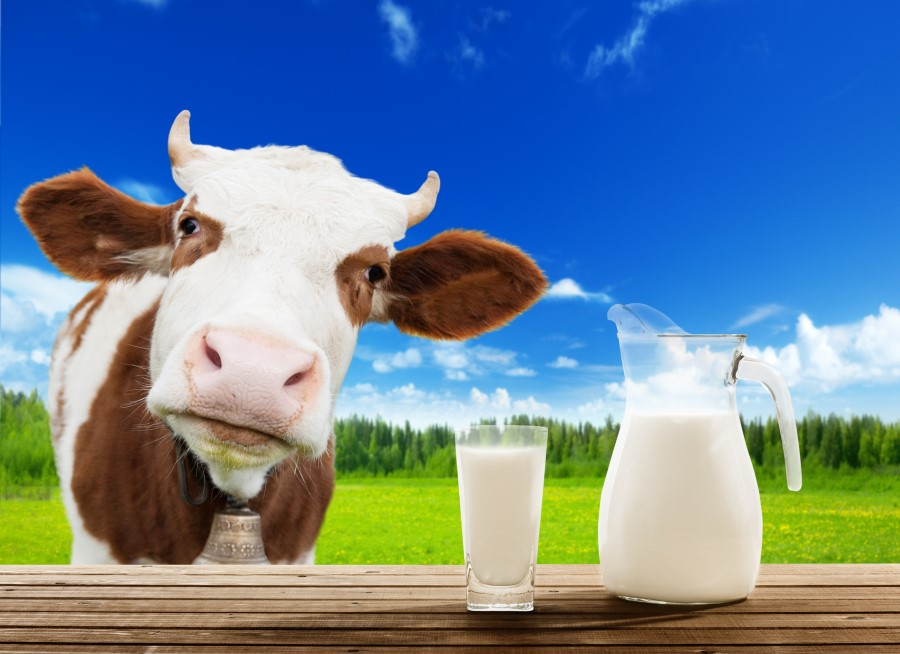
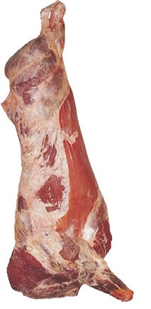

Ürünlerimiz
Organik Gezen Köy Tavuğu Yumurtası

Taze Köy Yumurtasının Faydaları
* Yumurta, icerigindeki lutein maddesi sayesinde görme azlıgına yol
açan maküler dejenerasyonu azaltır.
* İcerdigi kolin ile bellek ve ögrenme kapasitesini artırır.
* Asetilkolini artırır.
* Yumurta sarısı kalsiyumdan ve karotenoidlerden zengindir.
* Cinko icerigi yüksektir.
* Magnezyum icerigi yüksektir; bu nedenle migren, fibromiyalji gibi
rahatsızlıklara cok iyi gelir.
* Antioksidan ve antienflamatuvardır.
* Omega-3’ten zengindir.
* A, D, K vitaminleri, demir, selenyum, riboflavin ve niasinden
zengindir.
Organik Yağ Oranı Yüksek Süt

Organik Sütün Faydaları
* Antibiyotik içermez.
* Daha uzun ömürlü.
* Pestisit içermez.
* Kalp hastalığı ve diyabeti önler.
* Kemik yoğunluğunu destekler.
* Daha çok vitamin sağlar.
* İyi hissettirir.
* Omega-3’ten zengindir.
* A, D, K vitaminleri, demir, selenyum, riboflavin ve niasinden
zengindir.
Organik Doğal Besi Et

Organik Etin Faydaları
* Kırmızı et yüksek kalitede esansiyel amino grup asit içeren protein,
demir ve çinko yönünden zengindir.
* Gıdalardan alınan demirin sindirilmesine yardımcıdır.
* B grubu vitaminler için zengin bir kaynaktır.
* Kırmızı et en değerli hayvansal protein kaynağıdır.
* Et kan yapar ve kansızlığı önler.
* Bedeni canlı ve güçlü kılar.
* Zihinsel gelişmeyi sağlar.
* Şişmanlığı önler.
* Kırmızı et, önemli bir vitamin ve mineral kaynağıdır.